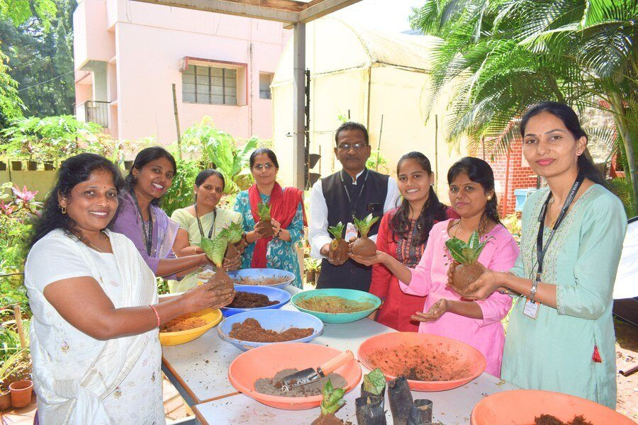
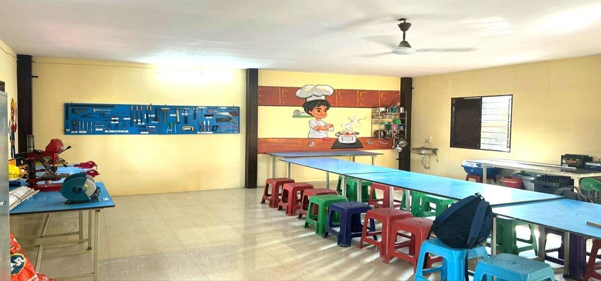
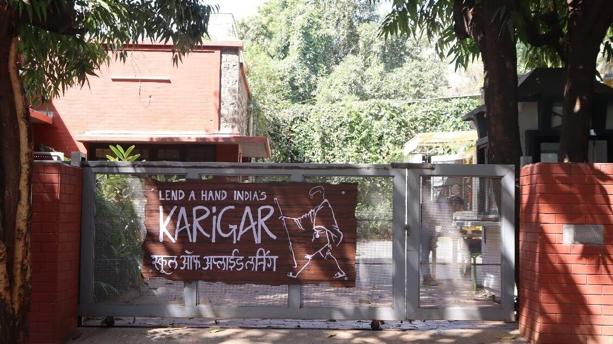
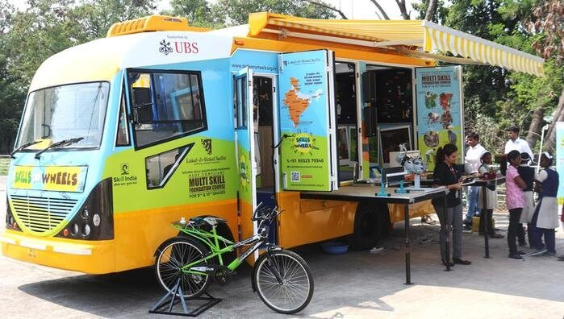
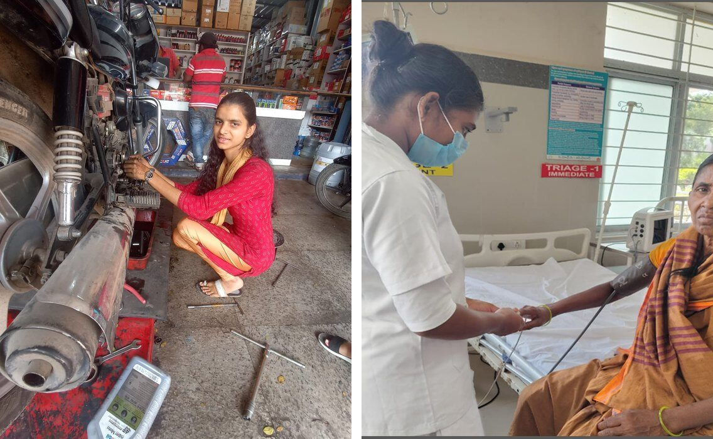

Introduction
Introducing skill education is one decision. Keeping it going is a different one, and it is the one that tends to decide whether students benefit. Lend A Hand India, a skill education partner for schools, works with private schools on both, with a single aim: that each school ends up with a skill education programme it can run on its own.
This article sets out what we offer for Classes 6–12, who each offering is for, and how the pieces fit together.
Since 2006, Lend A Hand India has worked with governments and schools to make skill education part of mainstream schooling, across 20 states and union territories and more than 20,000 schools. We are members of NCERT’s Curricular Area Group for Skill Education and contributors to its skill education textbooks for Classes 6–10, and our model was also cited in the Government of India’s Economic Survey 2023–24.
What we believe about implementation
A skill programme lasts when the school owns its timetable, its bench of trained teachers, its budget for consumables and its review routine. We can support a school in building those, but we cannot hold them up for the school. Everything below is designed with that in mind: the work should leave the school more capable, not more dependent.
1. Skill Education Teacher Training and Capacity Building
Skill education depends on teachers who can facilitate practical, project-based work, which is a different skill from delivering a lecture. Without that skill, even a well-equipped programme drifts back to reading and demonstrations.

Our teacher training follows four stages: learn, practice, implement and inspire. It is designed to help teachers confidently carry out experiential, skill-based learning, with support aligned to NEP 2020, NCF 2023 and CBSE expectations.
How the training works
- Live demonstrations. CBSE-certified lead facilitators show live examples of teaching strategies and classroom techniques, so teachers see how it is done and gain the confidence to adapt it.
- Hands-on activities. Teachers learn by doing, in a structured model focused on implementation. This strengthens facilitation skills and gives them access to ready-to-use classroom resources.
- Guided practice sessions. Teachers apply what they have learned in a safe, guided setting before they face a class.
- Group work and reflection. Teachers learn from one another, share ideas and exchange good practice, which supports continuing professional learning communities within the school.
2. Composite Skill Lab setup for schools
A Composite Skill Lab gives students a dedicated space to work with tools and materials across several skill areas. We support schools with planning, setup and related implementation support, so that space, equipment and use work together.
How we work: we start with sector selection across the three forms of work (life forms, machines and materials, human services), then plan the layout, equipment, safety SOPs and an inventory system, in line with CBSE’s 2026–27 Composite Skill Lab guidelines, to which we contributed technical inputs. We also help the school make sure the lab is used well, so it benefits students.

3. Karigar School of Applied Learning: exposure visits and learning programmes
Some decisions are easier to make after seeing a programme at work. Karigar, our School of Applied Learning in Pune, Maharashtra, recognised by CBSE as an Institute of Eminence, is a skills hub that shows what multi-sector skill education looks like in practice, and it draws on Lend A Hand India's experience of building skill education in schools.

It brings more than 10 sectors together in one place, each set up as a lab with specialist experts and a defined curriculum, and it caters to every age group. Students, teachers and school management can take part in exposure visits and learning programmes, and each group experiences it differently, according to its age and needs. It is also where our teacher training is held for schools that choose to send teachers to us. For a school still deciding whether and how to begin, a visit is a good first step.
4. Skills on Wheels: our mobile skill lab
Setting up a lab is a real commitment of space and budget, and a school is better placed to make it once its students have experienced hands-on learning. Skills on Wheels, a Lend A Hand India innovation, brings that experience to the school. It is a fully equipped mobile multi-skill lab in which trained skill trainers give students hands-on experience across six sectors. The school sees how its students respond before it commits space and budget, and gets a clearer view of what a lab of its own could do for them.

5. Mentoring and review after launch
Training and a lab are a start, not a finish. In the first year of delivery, we observe classes, mentor teachers, share monitoring templates and join review meetings, so problems are caught early and the school builds its own routine for keeping the programme on track.
6. Career guidance and internships (Classes 8–12)
Students also need help with a second question: what could they do next, and how do they get there? Too often that choice is made in Class 10 or 12 on marks and family advice alone. Two programmes connect skill education to real careers.
Career planning : Our Students to Professionals (S2P) curriculum is a five-year, teacher-led journey with a workbook for each class:
- Class 8 and 9: Students identify their interests and explore 20 career sectors.
- Class 10: They compare streams, ITI and diploma pathways, and build a career plan.
- Class 11: They meet professionals and take up an internship.
- Class 12: They prepare for life after school.
Teachers get online orientation, and schools can add on-site training, career events and alumni tracking.
Internships: NEP 2020 and NCF-SE 2023 both call for internships. Since our 2016 pilot in Pune, 13 states have adopted them and over three lakh internships have been completed. Students spend at least 90 hours at local businesses such as garages, clinics, shops and banks, and keep a daily diary. Students aged 14 and above can take part, in non-hazardous workplaces only, as the law requires.
We help the school run internships on its own, through orientation for teachers, students and parents, employer onboarding, student kits and monitoring. Among interns who gave feedback, 92% would recommend it to a friend, and 58% of interns were girls.

How the offerings fit together
The six offerings can be taken separately, but they also follow a natural path for a school starting out:
- See it. School leaders and teachers visit the Karigar School of Applied Learning to understand what a working programme looks like.
- Try it. Students experience hands-on learning through Skills on Wheels before the school commits resources.
- Prepare for it. Teachers are trained to facilitate Kaushal Bodh, Kaushal Vikas and other skill modules.
- Build for it. The school plans and sets up its Composite Skill Lab with our help.
- Sustain it. In the first year, mentoring and review help the school’s own team keep the programme on track.
- Connect it to careers. Students build a career plan from Class 8 and take up internships in Classes 11 and 12.
A school that already has a lab might begin with teacher training. A school that is unsure might begin with a visit. A school that has begun with the implementation may come only to understand whether there is something they can include that might provide better for their students.
Talk to us about your school
We bring expertise and implementation support. The school keeps the decisions that decide whether the programme lasts: protecting the skill period in the timetable, naming a coordinator with time for the role, budgeting for consumables and repairs, and reviewing skill education alongside other subjects.
If you would like to talk through which of these fits where your school is now, we will start by understanding your timetable, your teachers and what you want students to gain.